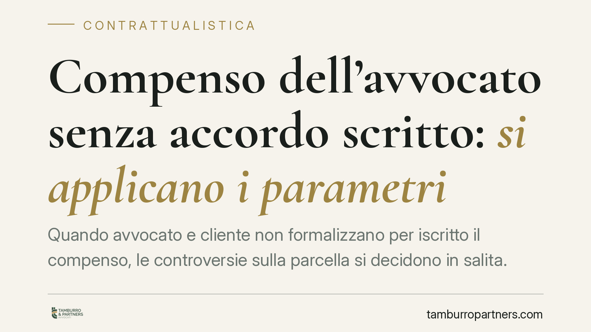

Compenso dell'avvocato senza accordo scritto: si applicano i parametri
Quando avvocato e cliente non formalizzano per iscritto il compenso, le controversie sulla parcella si decidono in salita. In assenza di accordo provato, il giudice liquida secondo i parametri forensi. Un esito che spesso non conviene a nessuno dei due: chiarire l'onorario in forma scritta resta la scelta più prudente, sul piano economico e probatorio.

La forma scritta del compenso: trasparenza, non nullità
L'art. 13 della L. 247/2012 (legge professionale forense) stabilisce che il compenso dell'avvocato è pattuito "di regola per iscritto all'atto del conferimento dell'incarico". È utile chiarire subito un punto, spesso frainteso: la forma scritta ha qui una funzione prevalentemente informativa e di trasparenza verso il cliente, non è un requisito di validità del patto.
In altri termini, un accordo verbale sul compenso non è di per sé nullo. La differenza non è formale: incide direttamente su chi deve provare cosa in caso di contenzioso.
Cosa succede se l'accordo non c'è (o non si prova)
Il comma 6 dello stesso art. 13 prevede che, in mancanza di accordo tra le parti, il compenso sia determinato secondo i parametri ministeriali. Oggi il riferimento è il DM 55/2014, più volte aggiornato, che fissa i valori medi per ciascuna fase e per ciascun scaglione di valore della causa.
Questo significa che, quando l'intesa non è stata formalizzata e non ne viene fornita prova, il giudice non "annulla" un rapporto: semplicemente liquida l'onorario applicando i parametri. Il risultato può discostarsi, in più o in meno, da ciò che le parti avevano in mente.
Sul piano probatorio, la giurisprudenza di legittimità ammette che l'accordo sul compenso possa essere dimostrato anche con mezzi diversi dal documento. Il vero nodo, quindi, non è una presunta nullità del patto verbale, ma l'onere della prova: chi afferma l'esistenza di un determinato accordo deve dimostrarlo. In mancanza, si torna ai parametri.
Perché l'assenza di accordo scritto non premia il cliente
C'è un'idea diffusa, e sbagliata, secondo cui non fissare nulla per iscritto convenga al cliente. Non è così.
I parametri del DM 55/2014 sono articolati per fasi (studio, introduttiva, istruttoria, decisionale) e crescono con il valore della lite. In cause di valore elevato, la liquidazione a parametri medi può superare quanto il cliente avrebbe concordato con un preventivo scritto. Al tempo stesso, il professionista che non documenta l'intesa si espone al rischio opposto: vedersi riconoscere meno di quanto pattuito a voce.
L'incertezza, insomma, lavora contro entrambi.
Implicazioni pratiche nei rapporti continuativi
Il tema è particolarmente sensibile nei rapporti strutturati tra studi e società, dove l'assistenza si articola in più pratiche nel tempo.
Qui l'assenza di un quadro scritto genera due criticità ricorrenti: la difficoltà di ricostruire a posteriori quali attività fossero ricomprese in un eventuale forfait e l'impossibilità di distinguere con chiarezza gli incarichi autonomi da quelli accessori. Per le imprese con più referenti interni, la mancanza di un mandato documentato rende anche più complessa la gestione contabile e l'eventuale rivalsa.
Un preventivo o un contratto quadro, aggiornato per singole attività, riduce sensibilmente il contenzioso sul dovuto.
Cosa fare in concreto
- Formalizzate il compenso all'avvio dell'incarico: un preventivo scritto o una lettera di conferimento che indichi criteri, scaglioni e voci escluse.
- Distinguete le attività: nei rapporti continuativi, specificate cosa rientra nel forfait e cosa viene fatturato a parte.
- Conservate la documentazione dell'intesa: scambi di e-mail, preventivi accettati, conferme scritte. Sono utili proprio sul piano probatorio.
- Verificate l'aggiornamento dei parametri: il DM 55/2014 è stato più volte modificato; il valore applicabile dipende dalla versione vigente al momento rilevante.
- Rivedete periodicamente gli accordi quadro: un mandato fermo nel tempo rischia di non coprire le attività effettivamente svolte.
In sintesi
Non esiste una nullità del patto verbale sul compenso dell'avvocato. Esiste, però, un problema concreto di prova: senza accordo scritto e dimostrabile, il compenso si determina per parametri, con un esito spesso diverso dalle attese. La forma scritta non è un adempimento burocratico, ma uno strumento di certezza a vantaggio di entrambe le parti.
*Contributo informativo a cura di Tamburro & Partners - Avv. Giuseppe Tamburro. Non costituisce parere legale.*
Ogni contratto ha il suo equilibrio.
Se vuoi una revisione delle clausole o una redazione su misura, scrivi allo studio. Ti rispondiamo entro un giorno lavorativo.